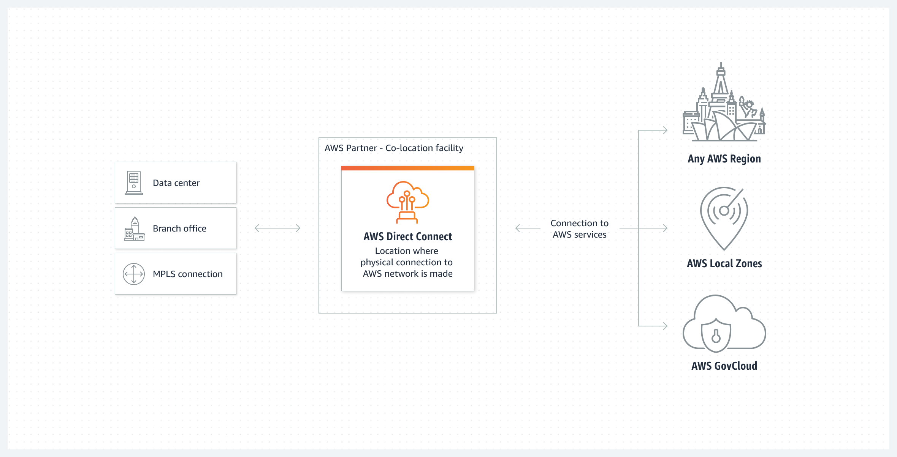
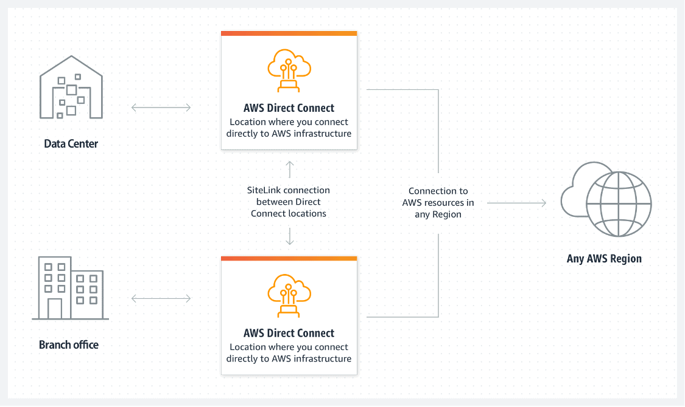

Beschreibung
AWS Direct Connect ermöglicht Unternehmen die Einrichtung einer dedizierten Netzwerkverbindung zwischen ihren lokalen Rechenzentren und der AWS-Cloud, ohne auf das öffentliche Internet angewiesen zu sein.
Diese direkte Verbindung gewährleistet eine private und hochbandbreitige Anbindung an die Amazon Virtual Private Cloud (VPC) und bietet eine Reihe von Vorteilen für Unternehmen, die sensible Daten verarbeiten oder hohe Leistungsanforderungen haben.
Die Einrichtung von AWS Direct Connect erfordert in der Regel mindestens einen Monat, da verschiedene Prozesse und Konfigurationen erforderlich sind, um die dedizierte Verbindung zu etablieren. Während dieser Zeit arbeiten AWS-Teams eng mit den Kunden zusammen, um sicherzustellen, dass die Verbindung optimal konfiguriert und bereitgestellt wird.
Eine der Hauptfunktionen von AWS Direct Connect ist die dedizierte Netzwerkverbindung, die eine verbesserte Netzwerkleistung und hohe Bandbreite gewährleistet. Diese Hochgeschwindigkeitsverbindung bietet eine konsistente Leistung für Anwendungen und Workloads in der AWS-Cloud und ermöglicht eine nahtlose Integration von lokalen und Cloud-Ressourcen.
Darüber hinaus verbessert AWS Direct Connect den Datenschutz erheblich, da Daten über eine private und abgeschottete Verbindung übertragen werden. Dies reduziert das Risiko von Sicherheitsverletzungen und schützt sensible Unternehmensdaten vor unbefugtem Zugriff.
Ein weiterer Vorteil von AWS Direct Connect ist die Reduzierung der Netzwerkkosten im Vergleich zur Nutzung des öffentlichen Internets für die Datenübertragung. Da die Verbindung privat und dediziert ist, entfallen die Kosten für die Nutzung öffentlicher Netzwerke, was zu erheblichen Kosteneinsparungen führen kann.
AWS Direct Connect bietet Unternehmen eine zuverlässige und sichere Möglichkeit, eine leistungsstarke Verbindung zwischen ihren lokalen Standorten und der AWS-Cloud herzustellen.
Obwohl die Einrichtungsdauer länger ist als bei internetbasierten Verbindungen, bietet AWS Direct Connect Unternehmen die Gewissheit einer stabilen und hochwertigen Netzwerkverbindung, die ihren anspruchsvollen Anforderungen gerecht wird.
Schlüsselwörter
> > > Schlüsselworte bzw. Schlagworte sollen uns dabei helfen, einen Service leichter zu erkennen, wenn es um Prüfungsfragen geht. Ließ dir die Fragen richtig durch und achte auf folgende Schlüsselworte. Sie können dir bei der Beantwortung der Fragen helfen.
- Container-Orchestrierung: ECS ermöglicht daren von Docker-Containern in der AWS-Cloud.
- Container-Definitionen: Definition von Containber die Verwendung von Aufgaben (Tasks) und Services.
- Docker-Integration: ECS unterstützt Docker-Container und ermöng von Docker-Images.
- Task-Definitionen: Spezifikationen, wie eine Aufgabe (Task) in einvon Services, um langfristig laufende Anwendungetartet und Aufgaben ausgeführt werden.
- Auto Scaling: Automatische Anpassung der Anzahl von las basieinierbaren Metriken.
- Load Balancing: Integration mit dem Elastic Load Balancing-Dienst für die Lr.
- AWS Fargate: Option zur Ausführung von Containern ohne die Notwendigkeit, EC2.
- Integration mit Amazon ECR: Nahtlose Integration mit d
Grafische Erklärung
 Prüfung Fragen
- Welcher der folgenden AWS-Services kann verwendet werden, um die lokale Umgebung eines Unternehmens mit einer VPC zu verbinden, ohne das öffentliche Internet zu nutzen?
- Ein multinationales Unternehmen verfügt über separate VPCs für jede seiner Geschäftseinheiten in der AWS Cloud. Das Unternehmen möchte auch sein lokales Rechenzentrum mit allen VPCs verbinden, um die organisationsweite Zusammenarbeit zu verbessern. Welche AWS-Services können kombiniert werden, um die effizienteste Lösung für diesen Anwendungsfall zu erstellen?
- Was bietet AWS Direct Connect?